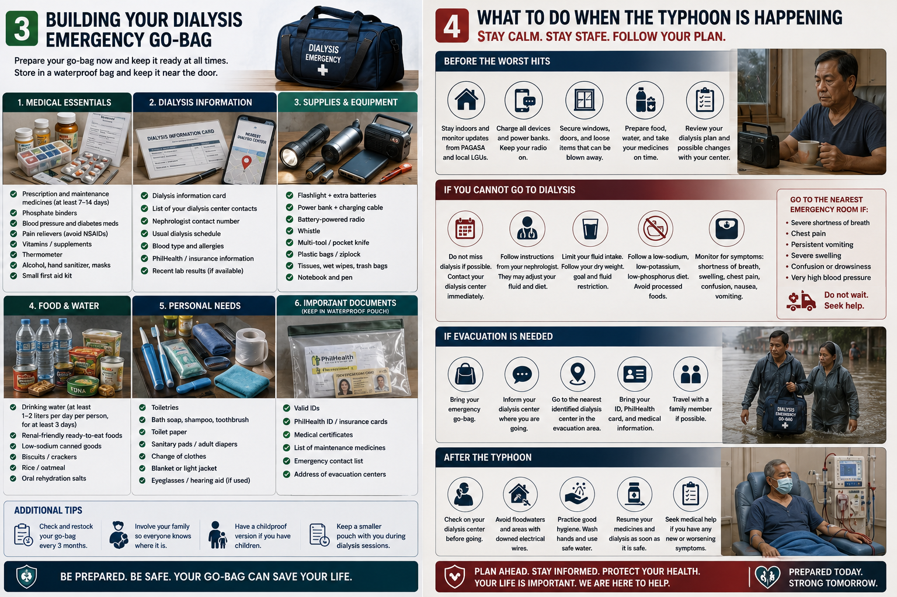
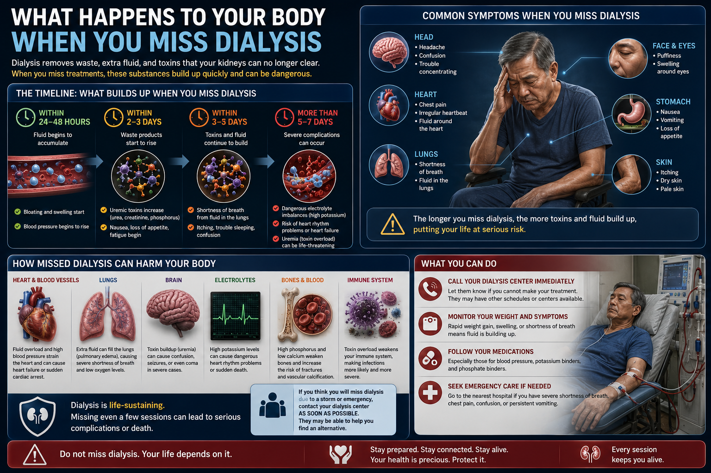
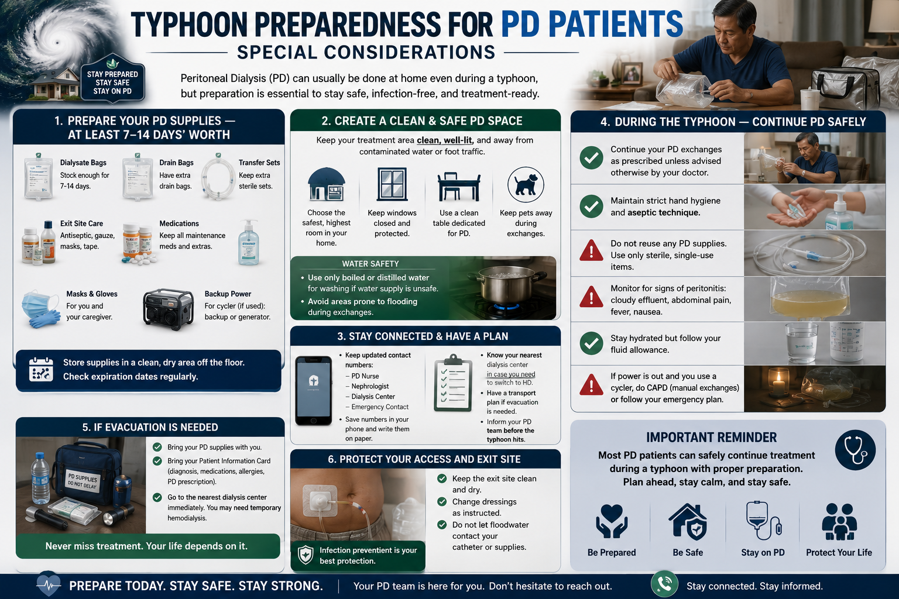
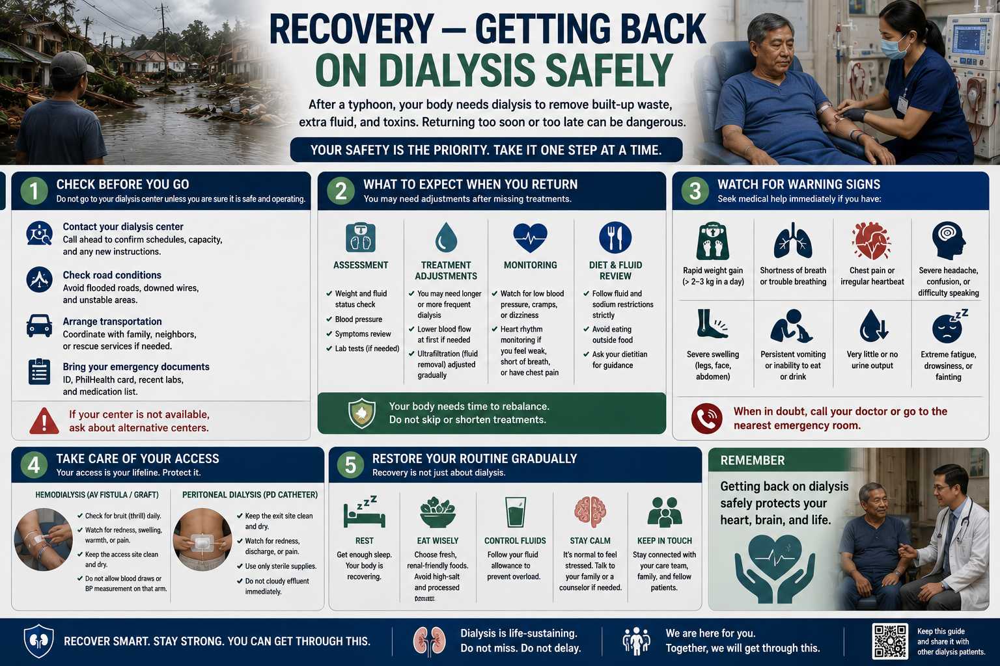

PAGASA Typhoon Signal Levels — What Each Means for Dialysis Patients
For most people, a typhoon signal is a reason to cancel school or work. For a dialysis patient, it may mean deciding 48 hours in advance whether to pre-dialyze, relocate to a safer area, or arrange emergency dialysis at a hospital. Every signal level requires a different response.
![PAGASA Typhoon Signal Levels 1–5 with wind speeds (30–60, 61–120, 121–170, 171–220, >220 km/h), what each level means, potential impact, and the specific actions a dialysis patient should take at each level; plus What to Prepare Right Now — medical essentials (7–14 day medication supply, phosphate binders, BP and diabetes meds, dialysis ID), dialysis information (center contacts, schedule, alternative centers, PhilHealth), emergency go-bag (waterproof bag, flashlight, batteries, radio, power bank, masks), food and water supplies (3–7 day water, low-sodium ready-to-eat meals, low-potassium choices), important documents (PhilHealth, IDs, emergency contacts), and home preparation (secure windows, store water, check generator). Be Ready. Be Safe. Be Prepared.](../images/typhoon-signals-prepare.webp)
Every signal level requires a different response — do not wait for Signal 5 to start preparing. By Signal 2, your medications should be filled, your center contacted, and your go-bag packed. Early preparation is the single most effective thing a dialysis patient can do before a typhoon.
Missing dialysis during a typhoon is the most preventable dialysis emergency
Most dialysis-related typhoon deaths in the Philippines are caused by delayed action — patients who assumed the storm would pass quickly, who could not reach their center after flooding, or who did not know what to do when their session was cancelled. Preparation eliminates this risk.
What to Prepare Right Now — Not When a Storm Is Coming
Disaster preparedness for dialysis patients must be done before the emergency, not during it. The ideal time to prepare your go-bag, identify backup dialysis centers, and stock medications is during a calm, non-storm period. June to November is typhoon season in the Philippines — prepare by May.
Know your backup dialysis centers
Identify at least two alternate dialysis centers within your region that accept emergency patients. For those in Metro Manila: Philippine General Hospital (PGH), NKTI, or nearby hospital-based HD units. For provincial patients: the nearest DOH-licensed HD center in your province and the next. Save their contact numbers now, not during a typhoon.
Talk to your nephrologist now
Ask your nephrologist specifically: "What is your plan for my dialysis during a typhoon?" Request a written disaster protocol letter stating your diagnosis, current dialysis schedule, and authorization for emergency dialysis at any center. This letter is your most important document in a disaster.
Dialysis center communication plan
Confirm with your dialysis center what their typhoon policy is. Most will call all patients if they must close. But do not rely on them to reach you — call them proactively at Signal 2. Ask: Will you close? Can I come early? Where should I go if you close?
Register with your LGU
Register as a dialysis patient with your barangay and municipal health office. Many LGUs have lists of residents with special medical needs for prioritized evacuation and emergency transport. The Philippine Red Cross also maintains such registries — register at your local chapter.
Waterproof your documents
Place copies of your dialysis prescription, recent lab results (within 3 months), nephrologist's contact, and PhilHealth card in a waterproof zip-lock bag. Keep one copy at home, one in your go-bag, and send a digital copy to a trusted family member or to your phone's cloud storage.
Building Your Dialysis Emergency Go-Bag
Every dialysis patient should maintain a go-bag that can sustain them for at least 72 hours — the minimum time before external assistance typically reaches affected areas after a major typhoon.
Minimum 7-day medication supply at all times during typhoon season
Never let your medications run below a 7-day supply between June and November. Pharmacies may be closed or flooded after a typhoon. If your medication supply is <5 days, request a refill immediately — do not wait until you run out.
Critical medications — never miss these
Phosphate binders (calcium carbonate, sevelamer, lanthanum) — must be taken with every meal even during a disaster. Antihypertensives — missed doses cause hypertensive crisis, which is life-threatening without access to a dialysis center. EPO/ESA injections (if prescribed) — require refrigeration; see below. Potassium binders (patiromer, sodium zirconium cyclosilicate) if prescribed.
Refrigerated medications — special planning required
Erythropoietin (EPO, darbepoetin) must be kept at 2–8°C. During a power outage, transfer to an insulated cooler with ice packs — EPO is stable for 7 days at room temperature (up to 25°C) if not shaken. Insulin users: the same rule applies. Do not freeze. Do not expose to direct sunlight. Prioritize these in your go-bag.
| Item | Quantity (minimum) | Notes |
|---|---|---|
| All maintenance medications | 7-day supply | In original labeled containers with prescriptions |
| Phosphate binders | Extra 7-day supply | Take with every meal, even in evacuation centers |
| Blood pressure monitor | 1 unit (with spare batteries) | Manual/aneroid preferred — works without power |
| Bottled water (safe drinking) | 3 days supply | For hydration; flood water is never safe to drink |
| Low-potassium emergency snacks | 3 days | Plain crackers, white rice, white bread — see diet section |
| Medical ID card / bracelet | Always on person | States "dialysis patient," blood type, emergency contact |
| Waterproof document pouch | 1 | Dialysis Rx, recent labs, nephrologist contact, PhilHealth card |
| Power bank (fully charged) | 10,000 mAh minimum | For phone calls and reaching emergency contacts |
| Flashlight with extra batteries | 1 | Do not rely on phone flashlight alone |
| Insulated cooler with ice packs | 1 small cooler | For EPO, insulin, and other refrigerated medications |
Do not drink flood water — ever
Floodwater after a typhoon is contaminated with sewage, chemicals, and pathogens. For dialysis patients, drinking contaminated water can cause severe infections that are far harder to treat without adequate kidney function. Drink only commercially bottled water or water that has been boiled for at least 1 minute after cooling — even if it looks clear.

Your go-bag is your lifeline — prepare it now, check it every 3 months, and store it near the door. When the typhoon hits, stay indoors, take all medications on schedule, follow strict diet and fluid limits, and contact your dialysis center as soon as it is safe to do so.
What to Do When the Typhoon Is Happening
Once a typhoon makes landfall, your primary job is to stay safe, take your medications on schedule, follow strict dietary discipline, and avoid going outside. Do not attempt to travel to your dialysis center during a typhoon — the risk of injury or death from the storm far exceeds the risk of missing one session when your diet is properly managed.
Take all medications on schedule
Even if you cannot eat a full meal, take your blood pressure medications and phosphate binders with whatever food is available. Missing antihypertensives for 24–48 hours during physical and emotional stress can trigger a hypertensive emergency. Set phone alarms for medication times.
Follow your strictest diet
During a missed dialysis, toxic waste products (potassium, urea, phosphorus, creatinine) accumulate. Eat only white rice, white bread, plain crackers, and egg whites. Absolutely avoid bananas, coconut water, tomatoes, camote, camote tops, and all fruit juices — even small amounts of high-potassium food can cause cardiac arrhythmia in a patient who has missed dialysis.
Restrict fluid strictly
Your kidneys cannot remove excess fluid during a missed session. Drink only the amount your nephrologist prescribed for fluid restriction. If you normally restrict to 500 mL/day, maintain that limit during the typhoon. Fluid overload from excess drinking causes pulmonary edema — shortness of breath that requires emergency treatment.
Communicate with your dialysis center
As soon as it is safe to use your phone, contact your dialysis center to report that you missed your session and ask for the earliest available rescheduled slot. Text is more reliable than calls during overloaded networks. Also notify your nephrologist or the on-call physician — most nephrologists will advise you by text during a disaster if you inform them.
Know when to call for emergency help
Go to the nearest ER or call emergency services (911) immediately if you experience: severe difficulty breathing, chest pain, rapid or irregular heartbeat, swelling of the legs worsening rapidly, confusion, seizures, or if you have missed 2 or more consecutive dialysis sessions. These are life-threatening signs of fluid overload, hyperkalemia, or uremia.
Warning signs that require emergency care — even during a typhoon
- Shortness of breath at rest or inability to lie flat (pulmonary edema)
- Chest pain or pressure (cardiac arrhythmia from hyperkalemia)
- Pulse that feels very fast, very slow, or irregular
- Extreme weakness, near-paralysis of arms or legs (severe hyperkalemia)
- Confusion, drowsiness, or difficulty waking up (uremic encephalopathy)
- Convulsions or seizures
- Missing 2 or more consecutive dialysis sessions
Emergency Dialysis Disconnect — "Clamp and Cut" & "Clamp and Cap"
If you are on the dialysis machine when a forced evacuation is ordered — rising floodwater reaching the center, structural danger, fire, or an order to leave immediately — you cannot wait for a nurse to properly return your blood and disconnect you. The clamp-and-cut (AV fistula/graft) and clamp-and-cap (central catheter) procedures allow a trained patient or caregiver to disconnect safely in under two minutes. Every dialysis patient and one adult family member should know this procedure.
This procedure is for genuine life-threatening emergencies only
Do not disconnect yourself because you are uncomfortable or in a hurry. This is only for situations where staying connected is more dangerous than disconnecting — active flooding, building collapse risk, fire, or a medical emergency requiring immediate transport. Always ask a nurse or technician to disconnect you if one is available.
Method 1 — "Clamp and Cut" (AV Fistula or AV Graft)
Used when your access is an arteriovenous fistula or graft connected by needles inserted into your arm. The goal is to stop the machine, remove the needles safely, and apply firm, sustained pressure.
Step-by-step: AV Fistula / AV Graft Emergency Disconnect
- 1Alert a nurse or technician first — shout or call out. If no one responds within 30 seconds and the danger is immediate, proceed.
- 2Turn off the blood pump — press the large red STOP button or switch off the machine. This stops blood from circulating.
- 3Clamp both blood lines — locate the roller clamps on the arterial line (red end, from your arm to the machine) and the venous line (blue end, from the machine back to your arm). Roll or pinch both clamps shut so no blood can flow through the tubing.
- 4Prepare gauze pads — take 2–3 sterile gauze pads (or any clean cloth if gauze is unavailable) in your free hand. You will apply these immediately when you remove each needle.
- 5Remove the tape from the arterial needle (the one closer to your shoulder, usually connected to the red-labeled line). Grip the needle hub — not the tubing — and withdraw it smoothly and straight out of the skin.
- 6Apply firm, direct pressure immediately — press gauze firmly on the needle site. Do not lift to check — maintain continuous pressure. Have a bystander hold pressure if you need your hand free.
- 7Repeat for the venous needle (the one closer to your hand, connected to the blue-labeled line). Remove, apply firm pressure.
- 8Hold pressure for 10–15 minutes — or until bleeding stops. Fistula sites bleed more than regular veins because of high blood flow. Do not release pressure early. Wrap tightly with a bandage roll or cloth if you must move.
- 9Evacuate and seek emergency care. Tell the receiving ER staff that you are a dialysis patient who self-disconnected during an emergency and the approximate time you disconnected.
You will lose some blood — this is expected and acceptable
Approximately 200–300 mL of blood remains in the dialysis circuit when you disconnect. In an emergency this blood is not returned to you. For most adults this is safe — similar to a blood donation. Do not panic. Focus on pressure at the needle sites and evacuating safely.
Method 2 — "Clamp and Cap" (Central Venous Catheter / Perm-a-Cath / Tesio)
Used when your access is a tunneled central catheter (Perm-a-Cath, Tesio, or temporary neck/chest line). These catheters do not require needles — they connect directly to the blood lines. The risk is different: you must cap the lumens immediately to prevent air embolism and catheter infection.
Step-by-step: Central Catheter Emergency Disconnect
- 1Turn off the blood pump first — press STOP. This is critical before any disconnection to prevent air from being pulled into the circuit.
- 2Clamp both catheter clamps — your catheter has two built-in clamps or slide clamps, one on each lumen (red = arterial, blue = venous). Slide or clamp both fully closed. This prevents blood loss and air entry.
- 3Clamp the blood lines too — use the roller clamps on both the arterial and venous tubing before disconnecting. Both sides must be clamped.
- 4Disconnect the blood lines at the catheter hub — twist the Luer-lock connectors counterclockwise. Keep your finger or a clean cloth briefly over the catheter opening as you prepare the caps.
- 5Cap both lumens immediately — attach the heparin-filled catheter caps (pre-filled caps are kept with your catheter kit). If caps are unavailable, a sterile syringe tip locked on the hub is an acceptable temporary measure. Never leave a lumen open — air embolism can be fatal.
- 6Cover the catheter exit site — wrap the catheter loosely against your chest or neck with gauze or a clean cloth. Protect it from water and contamination during the evacuation.
- 7Go to the ER. Tell the team you have a tunneled catheter that was disconnected during an emergency, the time of disconnection, and how much of your session was completed.
Air embolism — the most dangerous risk with catheters
An uncapped open catheter lumen can allow air to enter your bloodstream. Air embolism is immediately life-threatening. If you or a bystander accidentally leaves a lumen open — clamp it shut instantly and lay the patient on their left side with head down (left lateral decubitus position). Call emergency services immediately. This position traps air in the right ventricle away from the pulmonary artery and buys time for emergency treatment.
Practice before you need it
Ask your dialysis nurse to walk you through this procedure during a calm session. Identify where your clamps are, where the STOP button is, and where your caps are kept. One slow practice run makes an actual emergency much safer. Ask your center to document that you received this training.
What to bring when you go to the ER
Bring your dialysis ID card, your medication list, and if possible your catheter cap kit. Tell the ER staff: your dialysis center's name and number, what time your session started, what time you disconnected, and your dry weight. This allows them to estimate fluid and toxin accumulation and decide on emergency dialysis.
Ask your dialysis center to prepare a printed emergency card
Request a laminated wallet card that lists your dialysis type (HD vs PD), access type (fistula / graft / catheter / PD catheter), your nephrologist's emergency number, your center's 24-hour number, and the clamp-and-cut or clamp-and-cap steps relevant to your access. Keep it with your emergency go-bag and in your wallet. First responders and ER staff who have never met you can act faster with this information.
What Happens to Your Body When You Miss Dialysis
Understanding the physiology of missed dialysis helps patients make better decisions during a disaster. Toxins and fluid accumulate at predictable rates — and strict diet and fluid restriction genuinely slows that accumulation.

Strict diet during missed sessions is not optional — it is life-saving. A patient who follows their diet precisely during a storm reduces toxin and fluid accumulation significantly. Missing dialysis for more than 2–3 days without medical supervision is life-threatening.
Foods to completely avoid during missed dialysis
High-potassium foods: Banana, avocado, coconut water, camote (sweet potato), camote tops, malunggay, tomatoes, oranges, mangoes, pechay, kangkong, squash, beans. High-phosphorus foods: Dried fish, sardines, nuts, seeds, beans, dairy, dark colas, chocolate. High-sodium foods: Soy sauce, bagoong, fish sauce, instant noodles, processed meats — they worsen fluid retention.
Safer foods during missed dialysis
Plain white rice — very low potassium. Egg whites only (not yolk) — high protein, low potassium and phosphorus. White bread or plain crackers. Plain boiled chicken breast (discard the broth — potassium leaches into broth). Cucumber, cabbage (boiled) — relatively low potassium. Small portions only. Avoid adding any condiments.
The "boiling trick" reduces potassium in vegetables
Boiling vegetables in a large amount of water and discarding the water removes 30–50% of potassium. This is called "leaching." Do this with root crops and vegetables if they are the only food available. Peel, cut into small pieces, soak in water for 2 hours, then boil and discard the water before eating. Never drink or use the vegetable cooking water as soup.
Typhoon Preparedness for PD Patients — Special Considerations
PD patients have both an advantage and a unique vulnerability during disasters. The advantage: you are not dependent on a dialysis center. The vulnerability: your PD supplies require a clean environment, proper sterile technique, and continuous power for cycler patients — all of which are disrupted by a typhoon.
Stock at least 2 weeks of PD supplies
PD dialysate bags, transfer sets, mini caps, betadine/chlorhexidine, masks, and catheter dressings should be stocked 2 weeks in advance during typhoon season. Contact Baxter or Fresenius Philippines before major storms — they may be able to arrange delivery priority. Store supplies in an elevated, waterproof area — flood damage to PD bags makes them unusable.
Sterile technique cannot be compromised — even in a disaster
Performing PD exchanges in a flooding home or crowded evacuation center dramatically increases peritonitis risk. If you cannot guarantee a clean, dry, enclosed space for the exchange, it is safer to go to the nearest hospital with nephrology capability and request in-hospital management until your living situation is safe. Do not perform exchanges in floodwater or near open storm debris.
Cycler (APD) patients and power outages
APD cyclers require continuous electrical power during the 8–10 hour session. If power fails mid-session, the cycler will alarm and pause — most modern cyclers (Baxter HomeChoice, Fresenius Sleep Safe) allow completing or stopping the session manually. Know your cycler's manual override procedure before a disaster occurs. If power outage lasts >24 hours, contact your center to arrange manual CAPD as a bridge. Have your center's cycler hotline number saved.
Signs of peritonitis — go to the ER immediately
- Cloudy or turbid dialysate effluent (draining fluid)
- Abdominal pain or tenderness, especially around the catheter exit site
- Fever (temperature >38°C)
- Nausea, vomiting, or chills
- Redness, swelling, or pus at the catheter exit site
Peritonitis during a typhoon is a medical emergency. Do not attempt self-treatment. Go to the nearest hospital with a nephrology unit or ER.

PD patients can usually continue treatment at home during a typhoon — but preparation is everything. Stock 7–14 days of supplies, identify your safest room, maintain strict aseptic technique, and have a backup plan for power outages and evacuation.
Recovery — Getting Back on Dialysis Safely

After a typhoon, do not wait until you feel sick to seek dialysis. Contact your center immediately, check road conditions, bring your emergency documents, and watch for warning signs of fluid overload or electrolyte imbalance. Your safety is the priority — take it one step at a time.
Resume dialysis as soon as possible
Your first priority after a typhoon is to contact your dialysis center and get your next session rescheduled. Do not assume you can wait another day because you "feel okay." Patients who feel well after missing dialysis can deteriorate suddenly — potassium does not cause symptoms until it reaches dangerous levels. Feeling well does not mean you are safe.
If your regular center is damaged or closed
Contact your nephrologist first. Then contact backup centers you identified before the storm. The NKTI Disaster Response team coordinates emergency HD access after major typhoons — call (02) 8924-6101. Your LGU health office or NDRRMC can also coordinate emergency medical transport to the nearest functional HD center. Do not give up — keep calling.
Post-disaster water safety
Tap water after a typhoon may be contaminated for days to weeks. Never drink unboiled tap water. For drinking: use commercially bottled water or water boiled for 1 minute and allowed to cool. This applies even if the tap water looks clear. Contaminated water can cause diarrhea, which rapidly worsens kidney function and electrolyte imbalances.
Wound and infection risk
Dialysis patients are immunocompromised. Any wound, cut, or skin break contaminated with floodwater must be washed thoroughly and seen by a doctor within 24 hours. Floodwater contains Vibrio, leptospirosis, and other pathogens that are far more dangerous in patients with kidney disease. Do not walk through floodwater without waterproof footwear.
Medication review after a typhoon
After any period of missed dialysis, your nephrologist may need to adjust your antihypertensives, phosphate binders, or EPO dose. Blood pressure often rises during a disaster due to fluid accumulation and stress. Do not self-adjust your medications — contact your nephrologist for guidance as soon as communication is restored.
Evacuating as a Dialysis Patient
If evacuation is ordered, go early. Dialysis patients should not wait for mandatory evacuation orders — by that point, roads may be impassable. The ideal time to evacuate is 12–24 hours before expected typhoon landfall, while roads are clear and transport is available.
Inform evacuation center staff immediately
When you arrive at an evacuation center, immediately identify yourself to the center health officer as a dialysis patient. Show your medical ID card and document pouch. Ask about the LGU's protocol for patients needing dialysis — many barangay evacuation centers can coordinate transport to a functional HD center for registered special-needs patients.
What to bring in the evacuation
Your go-bag with all medications, your waterproof document pouch, a blood pressure monitor, bottled water, low-potassium food supplies, your power bank, and your insulated cooler if you have refrigerated medications. If you are a PD patient, bring enough supplies for at least 3 exchanges and your sterile technique materials. Travel light, but do not leave your medications.
Pre-register for priority evacuation transport before typhoon season
Many LGUs have ambulance or barangay vehicle prioritization lists for senior citizens and persons with serious medical conditions. Contact your barangay health center now and ask how to register as a dialysis patient requiring priority evacuation assistance. Having your name on this list before a storm could save your life.
Key Numbers to Save Before Typhoon Season
| Contact | Number / How to Reach | When to Call |
|---|---|---|
| National Emergency Hotline | 911 | Any life-threatening emergency — chest pain, severe dyspnea, seizures |
| Philippine Red Cross | 143 (disaster hotline) | Rescue, emergency transport, first aid during typhoon |
| NDRRMC Operations Center | (02) 8911-1406 / 8912-2665 | Coordinating emergency assistance after disaster |
| NKTI (National Kidney & Transplant Institute) | (02) 8924-6101 | Disaster dialysis coordination, emergency HD access in NCR |
| Philippine General Hospital ER | (02) 8554-8400 | Emergency dialysis for life-threatening missed dialysis (Metro Manila) |
| Your dialysis center | Save now | Session rescheduling, typhoon closure alerts, backup center referral |
| Your nephrologist | Save now | Clinical advice during missed sessions, medication guidance, emergency orders |
| Baxter PH Cycler Support | 1-800-10-888-8899 | APD cycler malfunction during disaster, supply emergency |
| Local barangay health center | Save now | Emergency transport coordination, evacuation priority registration |
Create a physical emergency card
Write (or print) a card the size of your PhilHealth card with: your full name, blood type, diagnosis ("ESRD on HD 3×/week" or "ESRD on CAPD"), your dialysis center's name and phone number, your nephrologist's name and contact, and one trusted family member contact. Laminate it. Keep it in your wallet at all times.
Tell your neighbors
Inform at least two trusted neighbors that you are a dialysis patient and what your emergency signs look like. Ask them to check on you if the typhoon results in power loss or communication disruption. A neighbor who knows you need dialysis three times a week can be the difference between help arriving in time or not.
Complete This Before Every Typhoon Season
📋 Before typhoon season (May/June)
- Medications stocked to 7-day supply minimum
- Go-bag assembled with all items in table above
- Medical document pouch waterproofed and updated
- Backup dialysis centers identified (minimum two)
- Backup dialysis center phone numbers saved
- Nephrologist's disaster protocol letter obtained
- Registered with barangay as special-needs patient
- Physical emergency card created and in wallet
- Two neighbors informed of your dialysis schedule
- Power bank purchased and tested
- Insulated cooler available for EPO/insulin
- Low-potassium emergency food stocked (3-day supply)
📋 When Signal 2 is raised
- Called dialysis center — confirmed open/closed and next session
- Asked about early dialysis option before typhoon
- All medications topped up to 7-day supply
- Go-bag reviewed and ready
- Power bank fully charged
- Insulated cooler prepared with ice packs
- Safe drinking water stocked (3 days)
- Low-potassium food supply confirmed
- Evacuation route and plan confirmed with family
- Emergency contacts verified and reachable
- Nephrologist notified of typhoon approach
- Blood pressure monitor with spare batteries ready

W. G. M. Rivero, MD, FPCP, DPSN
Specialist in Internal Medicine, Nephrology, and Clinical Nutrition. Integrative and evidence-based approach to kidney disease management in the Philippine context.
PRC 0105184 · seriousmd.com/doc/williamrivero